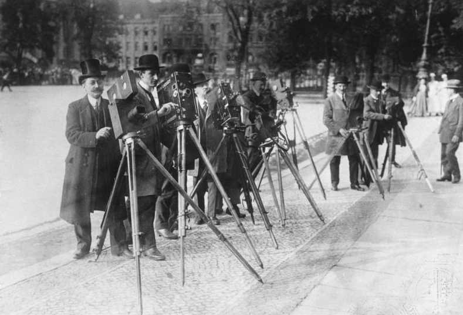

Первый Шаг
Охватить всю историю кинематографа – до мельчайших подробностей и нюансов – крайне трудно. И нет, мы и пытаться не будем. Но попробуем пройтись галопом по созданию и развитию одной из крупнейших современных индустрий.
Путь был тернистым, и человечество прошло не один этап. Прежде чем в 1895 году братья Люмьер представили широкой публике и научному сообществу свое детище – синематограф, – были изобретены технологии фотофиксации, «волшебный фонарь» (нечто вроде советских диафильмов, где с помощью проектора крутились статичные кадры с подписями, а рассказчик их озвучивал) и проектор Иосифа Тимченко, который оценило научное сообщество, но финансирования так и не нашлось.
В 1891 году коллега Томаса Эдисона – Уильям Диксон – представил прототип кинетоскопа. Это устройство напоминало шкаф с отверстиями для глаз – сквозь них зритель мог увидеть пленочные кадры, которые прокручивались, создавая иллюзию движения. Недостатков у кинетоскопа было несколько: демонстрация коротких фильмов была возможна только для одного человека, кинетоскоп был чересчур громоздкий и требовал электричества для работы (то есть ни о какой портативности не шло речи). Тем не менее заработали кинетоскопические салоны – в них за деньги можно было посмотреть «фильмы» на индивидуальных (по-другому было просто невозможно) сеансах.
Наконец, в декабре 1895 года в «Индийском салоне Гранд-кафе» во Франции на бульваре Капуцинок состоялся первый коммерческий кинопоказ. Зрители увидели несколько черно-белых немых коротких роликов длительностью всего 45–50 секунд. До большого кино, конечно, еще далеко – но первый шаг уже сделан.
Основы монтажа и спецэффектов
Кино – это магия, не правда ли? Вероятно, так решил и фокусник Жорж Мельес. Он был успешен, владел собственным театром и руководил другим театром. Кроме того, Мельес придумывал разнообразные фокусы.
Не сумев купить синематограф у братьев Люмьер прямо после первого коммерческого показа в 1895 году, Мельес приобрел аниматограф. Это устройство было создано Бертом Эйкрзом и Уильямом Полом и представляло собой подобие проектора. Переработав этот аппарат, фокусник стал снимать и показывать свои фильмы уже в 1896 году.

Как это нередко случается, развитию помогла ошибка или случайность – называть это событие можно как угодно. Важно то, что оно стало значимым шагом для кинематографа. Однажды Мельес снимал на парижской улице, и его камеру заклинило. Починить устройство удалось, но полученные кадры весьма удивили фокусника: люди будто поменялись телами друг с другом и с лошадьми.
Дело в том, что после починки камеры она продолжила снимать, но после полной прокрутки пленки два кадра склеились. Тогда Жорж Мельес начал нарочно творить подобные чудеса. Двойная экспозиция – прием, который заключается в том, что на один кадр делают два снимка. В итоге изображения накладываются друг на друга причудливым образом. Этот трюк используют до сих пор, фотографируя на пленку. Своего рода спецэффект – или монтаж.
Другой прием – разделенный экран. Закрываете половину кадра, снимаете фильм, затем отматываете пленку обратно, закрываете другую часть – и снимаете еще раз. При показе половины «соединялись» и демонстрировались рядом, словно это единый кадр. Такая техника позволяла актерам играть напротив самих себя. Кстати, этот «фокус» актуален и в наше время. Правда, теперь такой эффект достигается с помощью программ для монтажа – объединяют по половине от двух кадров, снятых в одном и том же месте с одного и того же ракурса.
Все это – не единственные находки Мельеса. В 1902 году он продемонстрировал публике свой фильм «Путешествие на Луну», где 15 минут показывают фантастическое исследование небесного тела учеными.
Голливуд, «Ленфильм» и «Мосфильм»: развитие кино как индустрии
До 1910-х Голливуд был поселком в пригороде Лос-Анджелеса. В 1911 году компания «Кентавр» из Нью-Джерси арендовала заброшенную придорожную закусочную, которую обустроили под киностудию и дали название «Студия Нестор». Это здание впоследствии стало «Кинолабораторией Голливуда».
В СССР кинематограф развивался своим путем. Одной из старейших советских киностудий считается «Ленфильм» – в 1914 году она возникла как Военно-кинематографический отдел Скобелевского комитета (благотворительное учреждение для выдачи пособий больным и раненым воинам).
В 1923 году объединились два ведущих киноателье – Ханжонкова и Ермольева. В 1924-м вышел их первый совместный фильм – «На крыльях ввысь» Бориса Михина. Это считается началом работы киностудии «Мосфильм».
Начинаются 1930-е. Появляется цветное кино. В Голливуде господствуют шесть киностудий: Metro-Goldwyn-Mayer (MGM), Paramount Pictures, Warner Brothers, 20th Century Fox, Universal Pictures и RKO Pictures. Давайте по порядку.
Первые кинопремии и кинофестивали
Оскар
 В 1926 году идея основать киноакадемию пришла в голову Луису Майеру – главе студии Metro-Goldwyn-Mayer. Год спустя Академия кинематографических искусств и наук уже была открыта и получила статус некоммерческой организации. В 1929 году прошла первая церемония вручения наград за заслуги в киноиндустрии. Название «Оскар» академия и сама статуэтка получили только на 6-й церемонии. Почему? Наверняка никто уже не знает – осталось только множество версий. То ли актриса Бетт Дэвис увидела в этом золотом человечке своего мужа по имени Оскар, то ли исполнительный секретарь академии Маргарет Херрик узнала в статуэтке не то своего дядю, не то кузена. Как было на самом деле – неизвестно, но писать и рассказывать про премию стало явно проще, когда золотая награда обрела имя.
В 1926 году идея основать киноакадемию пришла в голову Луису Майеру – главе студии Metro-Goldwyn-Mayer. Год спустя Академия кинематографических искусств и наук уже была открыта и получила статус некоммерческой организации. В 1929 году прошла первая церемония вручения наград за заслуги в киноиндустрии. Название «Оскар» академия и сама статуэтка получили только на 6-й церемонии. Почему? Наверняка никто уже не знает – осталось только множество версий. То ли актриса Бетт Дэвис увидела в этом золотом человечке своего мужа по имени Оскар, то ли исполнительный секретарь академии Маргарет Херрик узнала в статуэтке не то своего дядю, не то кузена. Как было на самом деле – неизвестно, но писать и рассказывать про премию стало явно проще, когда золотая награда обрела имя.
Золотой Глобус
С 1944 года Голливудская ассоциация иностранной прессы выбирает лучших из лучших. Правда, первое официальное вручение премии состоялось только в 1954 году на студии 20th Century Fox. После этого мероприятие стало ежегодным.
Венецианский кинофестиваль
Венецианский кинофестиваль стал первым официальным в своей сфере. Впервые он прошел в 1932 году как часть Венецианского биеннале Esposizione Internazionale dArte Cinematografica, посвященного искусству в целом.
Каннский кинофестиваль
Международный кинофестиваль во Франции был организован в 1939 году уже известным нам Луи Люмьером. Но сам фестиваль вынуждено был отложен сразу после открытия (во время которого прошла премьера «Горбун из Нотр-Дама» Уильяма Дитерле) из-за начавшейся Второй мировой войны. Так что полноценное торжество состоялось только в 1946 году, а регулярность Каннский кинофестиваль обрел в 1950-х.